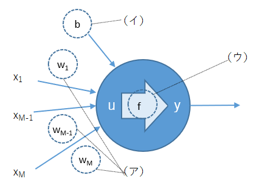
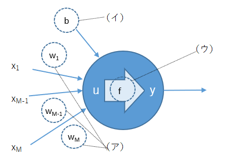

1.以下のニューロンの模式図で（ア）〜（ウ）に当てはまる選択肢をそれぞれ１つずつ選べ。

|
A. 活性化関数 B. 重み C. バイアス D. 総入力 E. 出力 |
答え Ｂ、Ｃ、Ａ
【解説】
| ニューラルネットワークの最小単位はニューロンです。人間の脳の神経細胞を 信号が伝わっていく様子を模倣しているといわれています。 |
|
1.以下のニューロンの模式図で（ア）〜（ウ）に当てはまる選択肢をそれぞれ１つずつ選べ。

答え Ｂ、Ｃ、Ａ 【解説】
|
 戻る
戻る 一覧へ
一覧へ 次へ
次へ